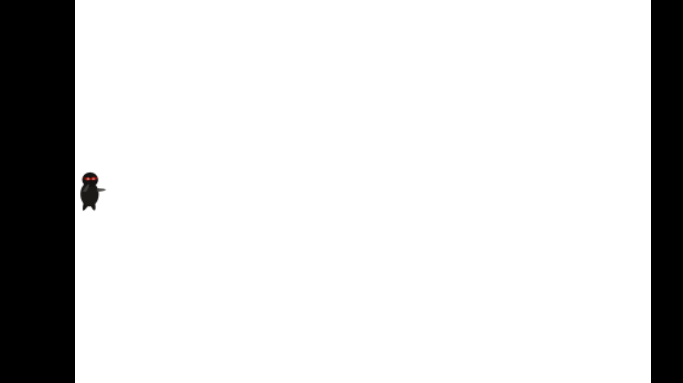

The source code of these tutorials is here: https://github.com/lihex/Cocos2dxSimpleGame. You can follow the articles to finish the game by yourself step by step, or download the finally source, simply build and run it.
Here¡¯re three images made by Ray Wenderlich ¡¯s wife , which would be used in SimpleGame.
After Create SimpleGame project , you must have SimpleGame folder now. Please download these images and copy them to SimpleGame/SimpleGame/Assets folder.
Right click Resources --> Add Existing Items.. --> Add the 3 images from Assets folder.
Open HelloWorldScene.cpp, replace the init method with following.
bool HelloWorld::init()
{
bool bRet = false;
do
{
//////////////////////////////////////////////////////////////////////////
// super init first
//////////////////////////////////////////////////////////////////////////
CC_BREAK_IF(! CCLayer::init());
//////////////////////////////////////////////////////////////////////////
// add your codes below...
//////////////////////////////////////////////////////////////////////////
/////////////////////////////
// 1. add your codes below...
CCSize winSize = CCDirector::sharedDirector()->getWinSize();
CCSprite *player = CCSprite::spriteWithFile("Player.png",
CCRectMake(0, 0, 27, 40) );
player->setPosition( ccp(player->getContentSize().width/2, winSize.height/2) );
this->addChild(player);
bRet = true;
} while (0);
return bRet;
}
Well, we can build and run the code. Now the ninja is dressed in black, hidden in the black background with red eyes. For the gameplay, we had to change the background to white. It¡¯s so easy, modify HelloWorld to inherit from CCLayerColor instead of CCLayer.
At first, modify the declaration in HelloWorldScene.h
// cpp with cocos2d-x
class HelloWorld : public cocos2d::CCLayerColor
Then modity the very beginning of HelloWorld::init() from
if ( !CCLayer::init() )
{
return false;
}
to
if ( !CCLayerColor::initWithColor( ccc4(255,255,255,255) ) )
{
return false;
}
Build and run, then you can see the hero standing lonely in the white background.
